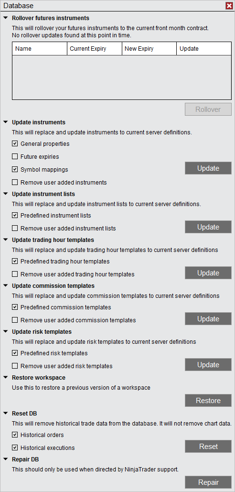

|
<< Click to Display Table of Contents >> Database Operations |


|
Database Operations
|
<< Click to Display Table of Contents >> Database Operations |
|
Various database operations can be performed from the Database window.

Rollover Futures InstrumentsThis will rollover your futures instrument to the most recent expiries across all open workspaces. If there are instruments open in the workspace that are eligible to be rolled forward they will be shown in the grid. For more information on this process please see the rolling over a futures contract section of the help guide. |
Update InstrumentsThis will replace and update all instruments to current server definitions.
The NinjaTrader data server maintains definitions for Instruments, NinjaTrader will update your local instrument general properties and symbol mappings should there be any changes on the server automatically. However if you make any changes to the either the general properties or the symbol mappings for an instrument then the instrument would no longer be automatically updated. Using this utility will remove any custom changes you have made locally and update the instrument definition to the servers version.
|
Update Instruments ListsThis will replace and update all instrument lists to current server definitions.
The NinjaTrader data server maintains definitions for the following instrument lists:
•Dow 30 •FOREX •Futures •Indexes •NASDAQ 100 •SP 500
Any time there is an instrument added or removed to the above instrument lists they will be automatically updated by NinjaTrader. However if you add or remove instruments from the list manually using the Instrument Lists window then the instrument list will no longer continue to be updated automatically by NinjaTrader. Should you wish to update and reset your instrument lists manually then you would use the following update utility.
Note: If you would like to report an incorrect or missing server definition please send an email to [email protected] and we will promptly correct the issue. |
Update Trading Hour TemplatesThis will replace and update all trading hour templates to current server definitions. |
Update Commissions TemplatesThis will replace and update all commissions templates to current server definitions. |
Update Risk TemplatesThis will replace and update all risk templates to current server definitions. |
Restore WorkspaceThis can be used to restore a previous saved version of a saved workspace. When selecting Restore you will be directed to the location of the recovery workspaces. They will be organized in folders with the names of the workspaces. Double click the folder of the workspace you want to recover and then select the recovery file with the date/time that you want to recover.
By default 10 previously saved versions of your workspaces will be retained. To modify how many recovery versions are available within the Control Center go to Tools and select Options. Within the General section go to Preferences and set the Versions of recovery workspaces. See the Options General section.
|
Reset the DatabaseThis will remove historical trade data from the database. It will not remove chart data or reset any Simulation accounts.
|
Repair the DatabaseThis should only be used when directed by NinjaTrader support and performs a repair on the NinjaTrader database. Depending on the size of the database this can take a few moments to complete. |